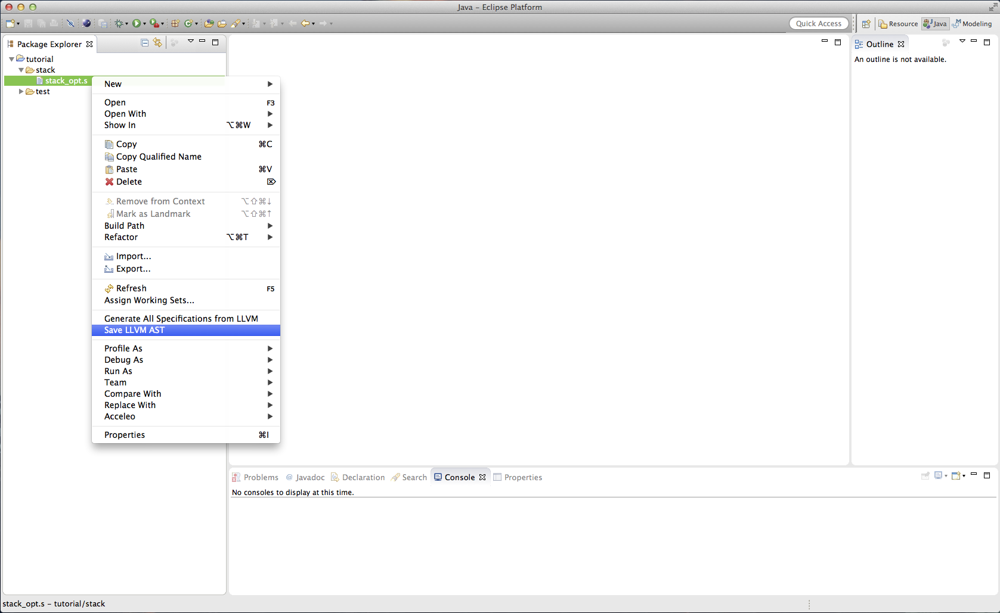
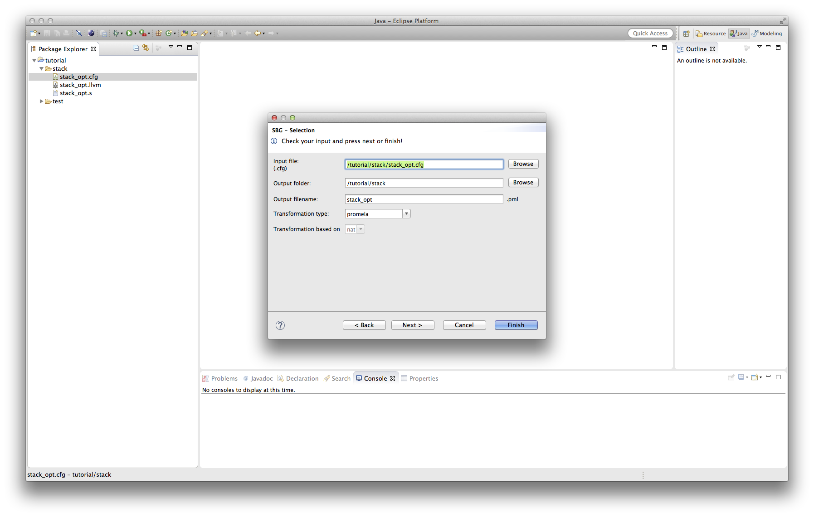
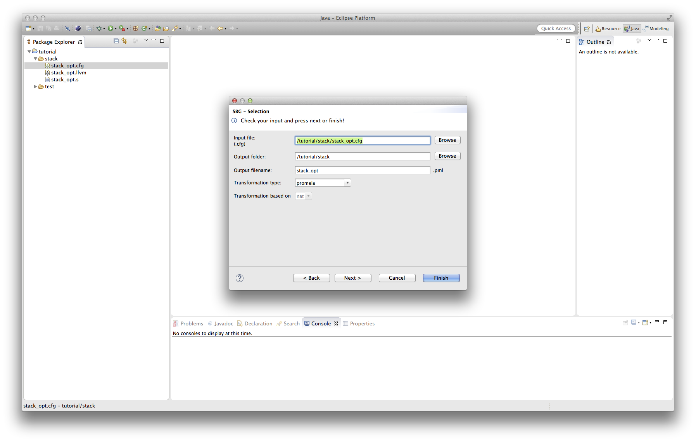

Step by Step including intermediate Files
In the following we will provide a step by step tutorial showing how to get from a C file to a valid Promela or KIV
specification, which can be used as input for a model checker. Each step is shown in detail, including screenshots which can be clicked to obtain a larger version.
1. From C to LLVM
As a first step a LLVM file has to be generated from the C code which should be analyzed. In order to do this, enter
the following command into the console:
clang -S [-O1-3] -emit -llvm <inputfile.c> -o <output.s>
Please note that the second parameter "[-O1-3]" is optimal and refers to three different compiler optimization levels.
2. From LLVM to AST
Once you obtained the LLVM code in the form of a '.s' file, you right click the '.s' file and choose 'Save AST'.

You will be prompted with a save dialog, where you can choose both the parent folder and the file name of the AST file to be generated.
 By default the folder containing the LLVM file is selected as a parent folder, whereas the default file name is the name of the '.s' file
extended by '.LLVM'.
In case the '.s' file contains any syntax errors, you will be notified and asked if you want to abort the AST generation.
By default the folder containing the LLVM file is selected as a parent folder, whereas the default file name is the name of the '.s' file
extended by '.LLVM'.
In case the '.s' file contains any syntax errors, you will be notified and asked if you want to abort the AST generation.

3. From AST to SBG
After the '.LLVM' AST file has been generated, it is time to generate a store buffer graph for a specific memory model. In order to do so, right click the '.LLVM' file
and choose 'New->Other'.
 Next choose the wizard category 'Weak2SC' and select 'Derive Store Buffer Graph from LLVM'.
Next choose the wizard category 'Weak2SC' and select 'Derive Store Buffer Graph from LLVM'.
 After clicking 'Next' you will find yourself in the AST selection wizard page where you can choose the AST file you want to generate a store buffer graph for. You have provide
a path to a valid '.LLVM' AST file and both a container and file name for the resulting store buffer graph file. Furthermore you have to choose a memory model as a reordering
strategy.
After clicking 'Next' you will find yourself in the AST selection wizard page where you can choose the AST file you want to generate a store buffer graph for. You have provide
a path to a valid '.LLVM' AST file and both a container and file name for the resulting store buffer graph file. Furthermore you have to choose a memory model as a reordering
strategy.
 Since you right clicked your 'LLVM' file the correct AST file is already chosen and the container for the store buffer graph is chosen accordingly. As a default file name, the AST file
name is used with a '.cfg' extension.
The AST file will be checked automatically for errors, unsupported LLVM code and other problems. If no problems are found, you can press 'Finish' and will find a generated store buffer graph
file in the specified folder. If any error was found, you will not be able to click 'Finish', but you have to choose 'Next' and will find a list of the errors. In case only minor
problems are found, you will receive a warning and can see the full list in the same wizard page.
Since you right clicked your 'LLVM' file the correct AST file is already chosen and the container for the store buffer graph is chosen accordingly. As a default file name, the AST file
name is used with a '.cfg' extension.
The AST file will be checked automatically for errors, unsupported LLVM code and other problems. If no problems are found, you can press 'Finish' and will find a generated store buffer graph
file in the specified folder. If any error was found, you will not be able to click 'Finish', but you have to choose 'Next' and will find a list of the errors. In case only minor
problems are found, you will receive a warning and can see the full list in the same wizard page.
4. From SBG to specification
Once again you right click the '.cfg' file and choose 'New->Other' and will be asked to selet a wizard. Select the 'Generate New Specification' wizard from the 'LINA' category.
 Now you should see the SBG selection wizard page where you have to choose a store buffer graph file, a target container for the specification and a transformation type. Depending
on the transformation type, you might also have to choose a file name for the specification and a basis.

At this point you can either hit 'Finish' to start the transformation to generate the whole specification, including all functions, or hit 'Next' to decide which functions should be
included in the specification and which not. You can also rename functions for the transformation. If you do so, you will find the old function names as comments in the transformation.
Now you should see the SBG selection wizard page where you have to choose a store buffer graph file, a target container for the specification and a transformation type. Depending
on the transformation type, you might also have to choose a file name for the specification and a basis.

At this point you can either hit 'Finish' to start the transformation to generate the whole specification, including all functions, or hit 'Next' to decide which functions should be
included in the specification and which not. You can also rename functions for the transformation. If you do so, you will find the old function names as comments in the transformation.

5. Manual Problem Resolution
You should be able to open your specification file(s) now in order to take a first look at it. If the tool had trouble with certain parts of the specification, you will be
notified by a comment in the according line stating a 'TODO' or 'NEEDS ATTENTION'.